What Tav is
one place in, one folder out- Aleph · Earth
A Python command-line tool. You give it a point or a drawn rectangle and it downloads everything inside: satellite imagery, elevation, 3D mesh, Street View and OpenStreetMap data.
- No AI inside
Like Aleph, Tav only collects data. It is the layer that lets a language model “look” at a place.
- Tav · Moon
Aleph is the first letter of the Hebrew alphabet; Tav is the last. The same idea with lunar layers: give a latitude and longitude, or a box, and get one folder back.
- Easier than Earth
The Earth version depends on undocumented Google services. Lunar data is public NASA and JAXA data, and most of it is served as open map tiles.
$ tav --lat 14.09 --lon -56.77 --radius 5km --out marius-pit/ marius-pit/ manifest.json every file: what it shows, resolution, date, sun angle nac/ every high-resolution frame of the spot, one per sun angle wac.png low-resolution context elevation.tif heights in metres thermal_night.tif night-time surface temperature gravity.tif gravity anomaly radar/ sounder tracks and radar images that cross the box pits.geojson known pits inside the box sheet.png all layers side by side, for a quick look
The coordinates are those of the Marius Hills pit. manifest.json is the file the agent reads first.
Layers
Earth layer · lunar equivalent| Aleph Earth | Lunar equivalent | Resolution | Notes | Do we have it? |
|---|---|---|---|---|
| Satellite imagery | LROC NAC | 0.5–2 m per pixel | Many frames of the same spot at different sun angles | Yes, in part: tiles and crops around hardware sites in Xenarch. The rest: ODE · LROC PDS |
| LROC WAC, global mosaic | 100 m per pixel | Context | Sample · NASA Moon Trek | |
| Kaguya Terrain Camera | about 10 m per pixel | Near-global coverage | Sample · JAXA DARTS | |
| Chandrayaan-2 OHRC | about 0.25 m per pixel | The sharpest, but limited coverage | Yes, in part: 300 tiles from three scenes in Xenarch. The rest: ISRO PRADAN portal | |
| Elevation | LOLA / SLDEM | 60–120 m per pixel | Global | Sample · LOLA, PDS · SLDEM, PGDA |
| Stereo DTMs from NAC | 2–5 m per pixel | Chosen sites only | Sample · LROC data products | |
| 3D mesh | No ready-made mesh | — | Made by draping the images over the elevation. Good only where a NAC DTM exists | No · nothing to download, we generate it |
| Street View | Surface photos from Apollo, Chang’e / Yutu, Lunokhod | — | Only at a handful of landing sites | Sample (Apollo only) · Apollo Lunar Surface Journal · Chang’e data, CNSA |
| OpenStreetMap | IAU names (Gazetteer), crater catalogues, Lunar Pit Atlas (over 200 pits), USGS geologic map, landing sites | — | Vector data spread over different sources, not one database | Sample · Gazetteer · Crater database · Pit Atlas · Geologic map |
| Layer | What it is | Resolution | Do we have it? |
|---|---|---|---|
| Diviner | Night-time temperature | about 240 m per pixel | Sample · PDS Geosciences |
| GRAIL | Gravity | a few km | Sample · PDS Geosciences |
| Kaguya radar sounder | Radar below the surface | single tracks | Sample · JAXA DARTS |
| Mini-RF | Radar images | partial coverage | Sample · PDS Geosciences |
| M³ and Kaguya | Mineral composition maps | — | Sample · M³, PDS Imaging · JAXA DARTS |
Samples on disk
downloaded 6 Nov 2026 · test point: Marius Hills pitWe downloaded a sample of every layer above into data/tav/ (not in git). Rule: a source under 1 GB is taken whole, a bigger one gives one product over the Marius Hills pit, 14.09° N, 303.23° E. Every number below was measured on the downloaded files.


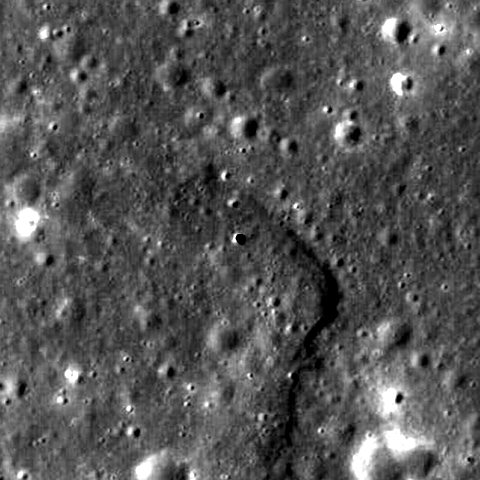

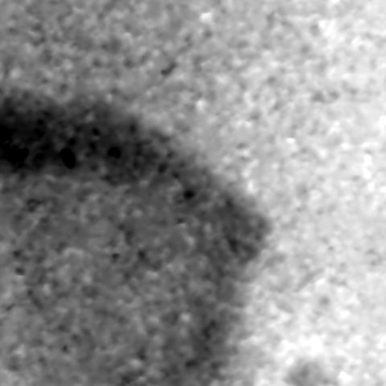

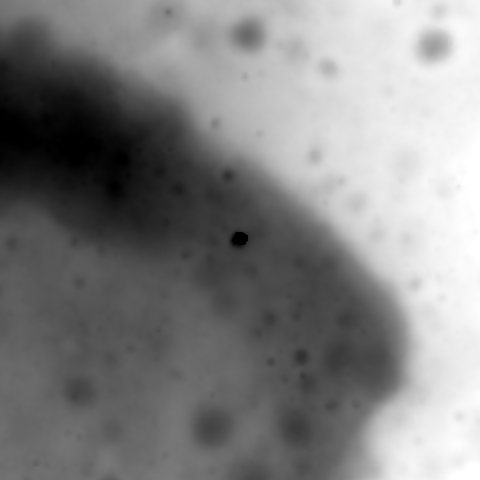

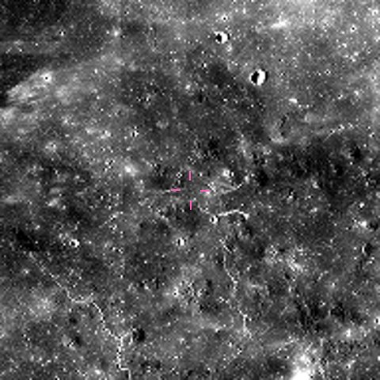

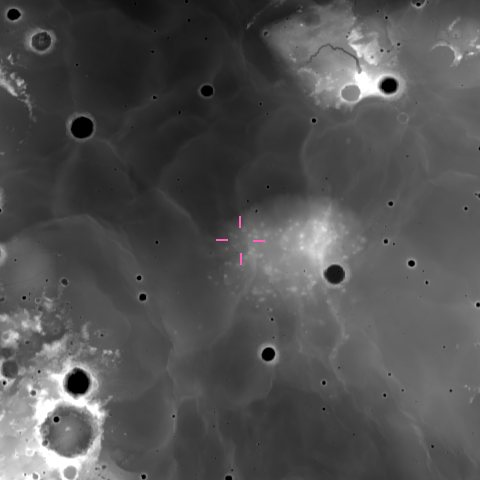

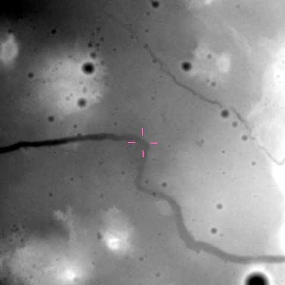

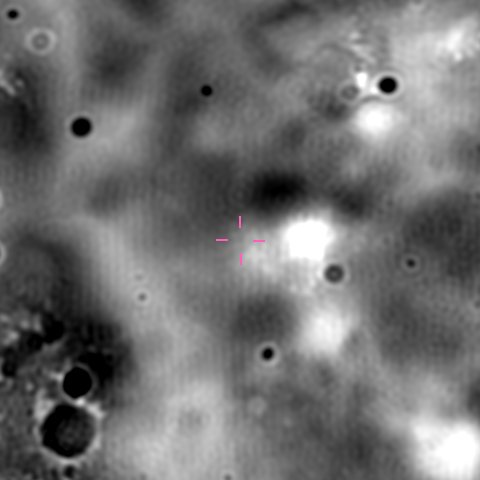

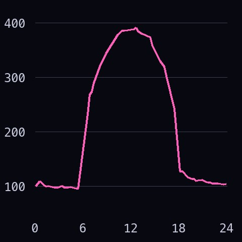

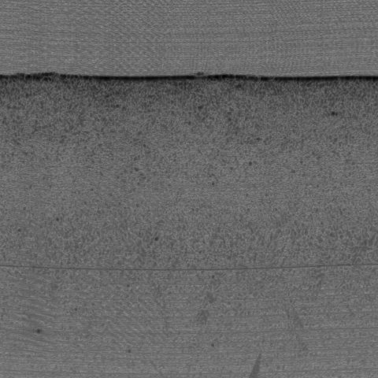

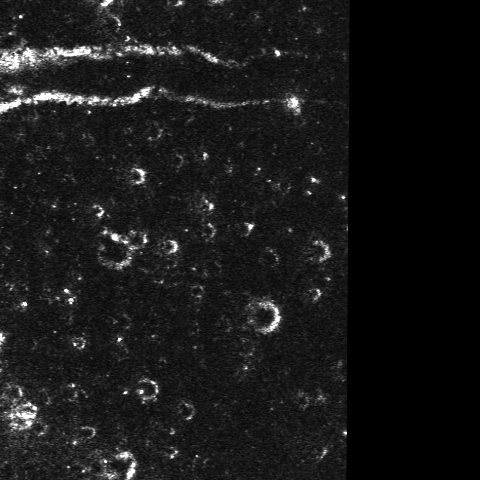

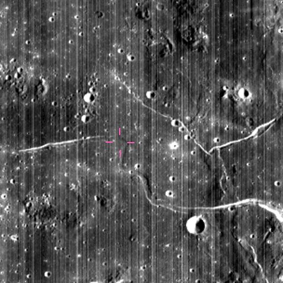

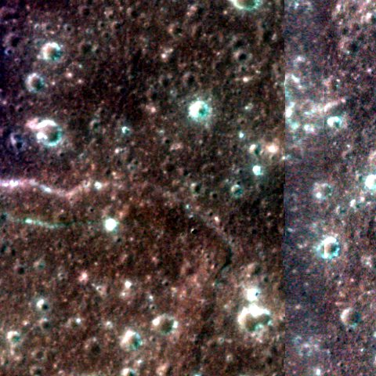

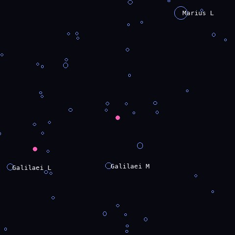

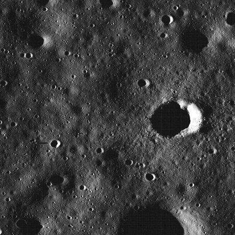

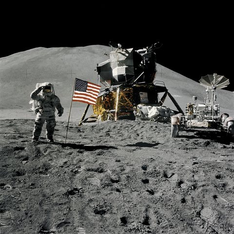
| Layer | Format | Sample on disk | What the numbers say |
|---|---|---|---|
| LROC NAC | PDS3 .IMG, label inside the file. 16-bit integers, brightness = value × 3.05e-5. Not map-projected | 1 frame of 57, M122584310LC · 5,064 × 52,224 px · 529 MB | 0.48 m per pixel, sun 25° from vertical. The 57 frames span sun angles from 12° to 160°; 13 were taken at night. A frame has no coordinates per pixel: we found the pit by its shadow, at line 30,792 |
| LROC WAC | PDS3 .IMG, 32-bit float, plus a GeoTIFF copy | Whole Moon at 948 m per pixel · 5,760 × 11,520 px · 321 MB | The 100 m mosaic is 8 tiles of 2.9 GB each, so we took the 32 pixel-per-degree version. Mean brightness 0.046, at the pit 0.019: dark mare lava |
| Kaguya TC | PDS3 .img + .lbl, 16-bit big-endian | 1 tile of 3° × 3°, image and elevation · 12,288 × 12,288 px · 577 MB | 7.4 m per pixel. Tile heights from −2,218 to −598 m. The pit shows as a 28 m dip (real depth 40 m) |
| Xenarch | PNG crops 2,048 × 2,048, 8-bit, with CSV and COCO JSON catalogues | 123 of 11,593 files · 280 MB of 4.0 GB | 4,633 catalogued frames (4,133 Moon, 500 Mars) over 100 hardware sites. Moon median 0.98 m per pixel. Needs a Hugging Face login |
| Chandrayaan-2 OHRC | PNG tiles 1,024 × 1,024, 8-bit, with a CSV giving latitude and longitude per tile | All 300 tiles in Xenarch · 139 MB | Three scenes at 62–74° S, 0.23–0.26 m per pixel: the sharpest images we hold. Each tile is a dot in the Tav map. The full archive at ISRO PRADAN needs an account |
| LOLA | PDS3 .img + .lbl, 16-bit, height = value × 0.5 m. JPEG 2000 copy | Whole Moon at 4, 16 and 64 pixels per degree · up to 11,520 × 23,040 px · 789 MB | 474 m per pixel at best. Lowest point −8,982 m at 70.3° S 187.5° E, highest +10,686 m at 5.4° N 201.3° E. Pit rim at −1,566 m |
| SLDEM | JPEG 2000, signed 16-bit, height = value × 0.5 m | 1 tile of 32, 0–30° N 270–315° E · 23,040 × 15,360 px · 177 MB | 59 m per pixel. Gives −1,569 m at the pit, 3 m from LOLA. The scaling is not in the label: we inferred it from LOLA. The float version of the tile is 1.6 GB |
| NAC stereo DTM | GeoTIFF, 32-bit float, metres | MARIUSPIT01 elevation, shaded relief and 4 m orthophotos · 3,331 × 12,529 px · 519 MB | 4 m per pixel, 67% of the grid has data. Heights from −1,780 to −1,276 m. The pit shows as an 18 m dip: stereo cannot see the shadowed floor |
| Surface photos | JPEG scans of film, 4,000–5,400 px wide | 8 Apollo photos, missions 11 to 17 · 28 MB | The image links in the Apollo Lunar Surface Journal are broken, so these come from the NASA Image Library. Chang’e data needs an account: not downloaded |
| Gazetteer | Shapefile, points, 19 fields | Complete · 9,087 names · 46 MB | 7,064 satellite craters, 1,615 craters, 112 rilles. Nearest name to the pit: Galilaei M, 25 km away |
| Crater database | Shapefile, points, 19 fields | Complete · 1,296,796 craters of 1 km or more · 746 MB | Median diameter 1.6 km; 83,061 craters over 5 km. 4 craters within 10 km of the pit, 30 within 50 km |
| Pit Atlas | Web table, saved as CSV with 13 columns, plus the atlas PDF | Complete · 278 pits · 145 MB | Median depth 9 m, deepest 105 m. Marius Hills pit: 55 × 49 m opening, 40 m deep. 2 pits within 100 km of it |
| Geologic map | Shapefiles and geodatabase in metres, plus raster | Complete · 12,247 polygons, 49 units · 606 MB | The pit sits in unit EIp, the Eratosthenian-Imbrian plateau unit |
| Diviner | Text table, 11 columns: position, local hour, 8 temperatures | 1 band of 18, latitudes 10–20° N · 1,382,400 rows · 161 MB | Cells of 0.5°, about 15 km, in 96 time steps. At the pit: 392 K just after noon, 97 K before dawn, 105 K night average. The 240 m maps are 6.5 GB each |
| GRAIL | PDS3 .img + .lbl, 32-bit float, milligals. GeoTIFF copy | 2 global maps of 35: free-air and Bouguer · 2,880 × 5,760 px · 145 MB | 1.9 km per pixel. Free-air gravity from −1,330 to +1,782 mGal over the Moon, +16 mGal at the pit, Bouguer +194 mGal |
| Kaguya radar sounder | PDS3 .img + .lbl, 8-bit, each column starts with a 55-byte header | 1 track, 22 Dec 2007, 34° S to 78° N · 44,636 × 1,000 px · 50 MB | The track passes 59 km east of the pit. The ODE location search does not work for this instrument: tracks must be picked by their start and stop longitude |
| Mini-RF | PDS3 .img + .lbl, 32-bit float | 1 strip, two products, and the global mosaic at 32 pixels per degree · 419 MB | Strip at 14.8 m per pixel, 1,116 px wide; the pit lies at its edge. Polarisation ratio 0.47 in the strip, 0.53 over the Moon. The mosaic covers 64% of the surface |
| M³ | ENVI cube + .HDR, 32-bit float, 85 bands from 461 to 2,976 nm | 300 lines of 27,795, cut over the pit with partial downloads · 31 MB of 2.7 GB | 140 m per pixel. Reflectance at the pit rises from 0.028 at 750 nm to 0.059 at 2,000 nm. The server sends any byte range, so Tav can cut a box without the full file |
| Kaguya MI | PDS3 .img + .lbl, 9 bands, 16-bit big-endian, reflectance = value × 2e-5 | 1 tile of 1° × 1° · 2,048 × 2,048 px · 97 MB | 14.8 m per pixel, bands from 414 to 1,548 nm. Median reflectance at 749 nm: 0.047 |
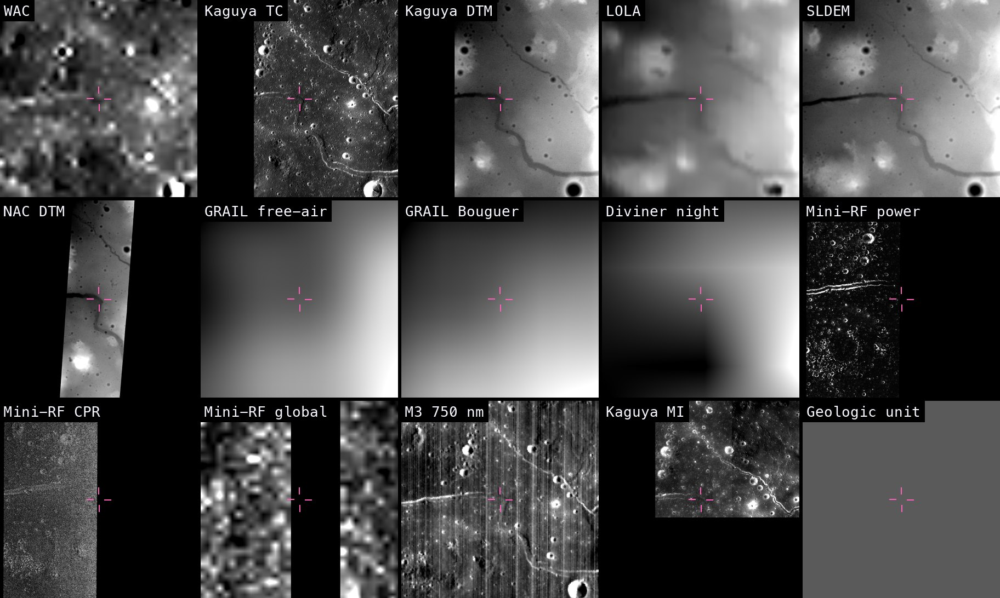
| Group | Sources | How it loads | Does it merge? |
|---|---|---|---|
| Map rasters · 9 | WAC, Kaguya TC, LOLA, SLDEM, NAC stereo DTM, GRAIL, Mini-RF, Kaguya MI, geologic map raster | GDAL opens every file directly and reads size, projection and scale from the label. No custom code | Yes. One reprojection call per layer. Only SLDEM needed a fix: its longitudes run 0–360° |
| Rasters without a map · 2 | Diviner, M³ | Diviner is a text table, M³ an ENVI cube with pixel positions in a separate file | Yes, with about 15 lines of code each to place the values on a grid first |
| Vector · 3 | Gazetteer, crater database, Pit Atlas (and the geologic map polygons) | Any shapefile or CSV reader | Yes, as points and outlines drawn on top. Longitudes come as 0–360°, ±180° or metres |
| Not on the map · 4 | NAC raw frame, Kaguya radar sounder, Xenarch crops, surface photos | All open (PDS3, PNG, JPEG) | Not as they are. A NAC frame needs the spacecraft geometry (SPICE, ISIS) to be projected. A sounder track is a depth profile along a line. Crops and photos carry only a site position |
The result is data/tav/merged/marius_stack.tif: one GeoTIFF of 2,048 × 2,048 pixels with 15 named bands, 99 MB. The layers agree with each other: the NAC stereo DTM and SLDEM differ by 0.4 m on average (3.8 m spread), the hole in the NAC DTM falls 14 m from the Pit Atlas position, and the pit shadow in Kaguya TC 33 m from it. Kaguya TC elevation sits 14 m higher than SLDEM everywhere, so it needs a constant correction.
A photo or a crop cannot become a layer, but it has a place. Each dot is one item on disk: click it to see the picture. The violet line is the radar sounder track.
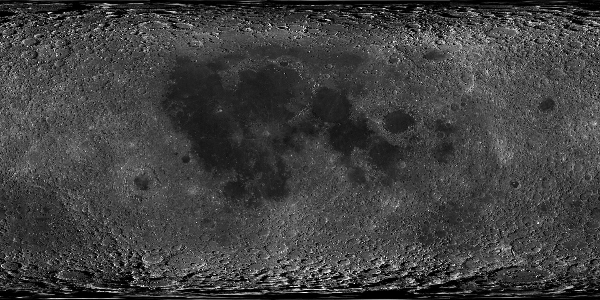
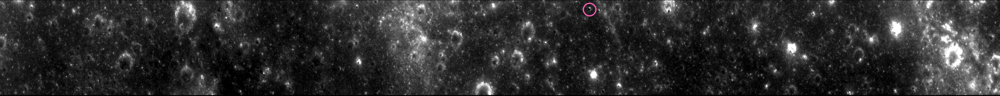
NAC raw frame. The camera has a single row of 5,064 pixels. The spacecraft flies forward and the row is read 52,224 times: the file is those rows stacked in time order, a strip 25 km long. Nothing in the file says where a pixel is on the Moon. The label gives only the four corners, good to about 300 m. To put it on the map you need the position and pointing of the spacecraft at each instant (the SPICE files) and software that uses them (ISIS, from USGS). Until then it is the sharpest picture we hold, 0.48 m per pixel, with a dot on the map.
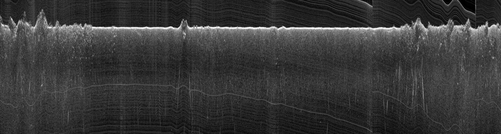
Radar sounder track. Not a picture from above: a vertical cut through the ground. The radar sends pulses straight down as the orbiter flies north. Each column is one position along the orbit; going down a column is the time the echo took to come back, 25 m per pixel. The bright line is the surface: flat over the mare in the middle, rough over the highlands at both ends. Echoes below it can be buried lava layers, or reflections from craters to the side. It merges with the map only as a line, the violet one above, and this track passes 59 km east of the pit.
Five different containers (PDS3, GeoTIFF, JPEG 2000, ENVI, shapefile) and three longitude conventions (0–360°, ±180°, metres). GDAL already reads all of them, so Tav does not need its own readers.